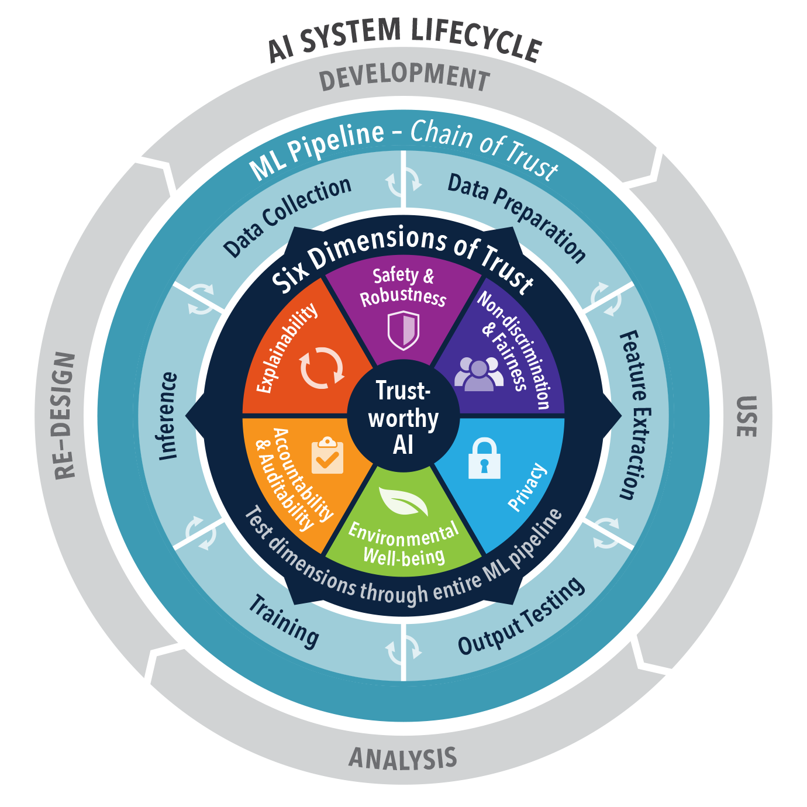

Suggested File Structure
While the file structure will not make much difference on the correctness of your project, this suggested file structure will encourage code reproducability and explainability. Much of it will be auto generated at this point from the three previous steps, but we’ll add a few things as well as some explanations.
Pipeline
We’ll model our repo structure after the TAI pipeline developed by NDCRANE.

This pipeline consists of 6 stages of development.
- Data Collection
- Data Preparation
- Data Cleaning
- Feature Extraction
- Training
- Inference
We’ll create one Jupyter Notebook for each stage in our nbs/ directory. It should look like the following (where index.ipynb will convert to our repos’ README.md):
nbs/
├── index.ipynb
├── 01_data_collection.ipynb
├── 02_data_preparation.ipynb
├── 03_feature_extraction.ipynb
├── 04_output_testing.ipynb
├── 05_training.ipynb
└── 06_inference.ipynbData Management
As mentioned briefly on the previous page, data will be managed with DVC. We’ll make a directory with in our repo for all data. Here let’s separate data into three categories.
raw/- import original data from here before cleaning anythingiterim/- data in the processed of cleaning goes herecleaned/- data ready for training goes here
Thus our directory structure for data should look similar to the following:
data/
├── raw/
| └── raw_data.csv
├── iterim/
| └── iterim_data.csv
├── cleaned/
└ └── cleaned_data.csv
## Full Structure
Compiling these in our auto-generated directory from pdm, dvc, and pdm, the repo structure should look similar to the following
```tree
project-name/
├── .gitignore
├── .pdmtoml
├── LICENSE
├── MANIFEST.in
├── pdm.lock
├── pyproject.toml
├── README.md
├── ssettings.ini
├── setup.py
├── styles.css
├── .github/
| ├── workflows/
| | ├── deploy.yaml
| └ └── test.yaml
├── .venv/
| └── ...
├── data/
| ├── raw/
| | └── raw_data.csv
| ├── iterim/
| | └── iterim_data.csv
| ├── cleaned/
| └ └── cleaned_data.csv
├── nbs/
| ├── index.ipynb
| ├── 01_data_collection.ipynb
| ├── 02_data_preparation.ipynb
| ├── 03_feature_extraction.ipynb
| ├── 04_output_testing.ipynb
| ├── 05_training.ipynb
| └── 06_inference.ipynb
├── model/
| └── ...
└── eval/
| ├── plots/
└ └── metrics.json